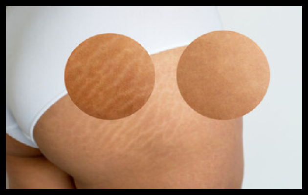
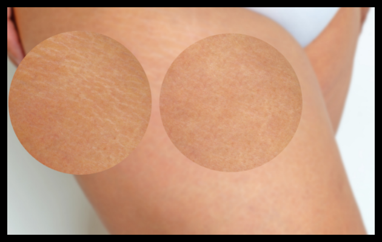
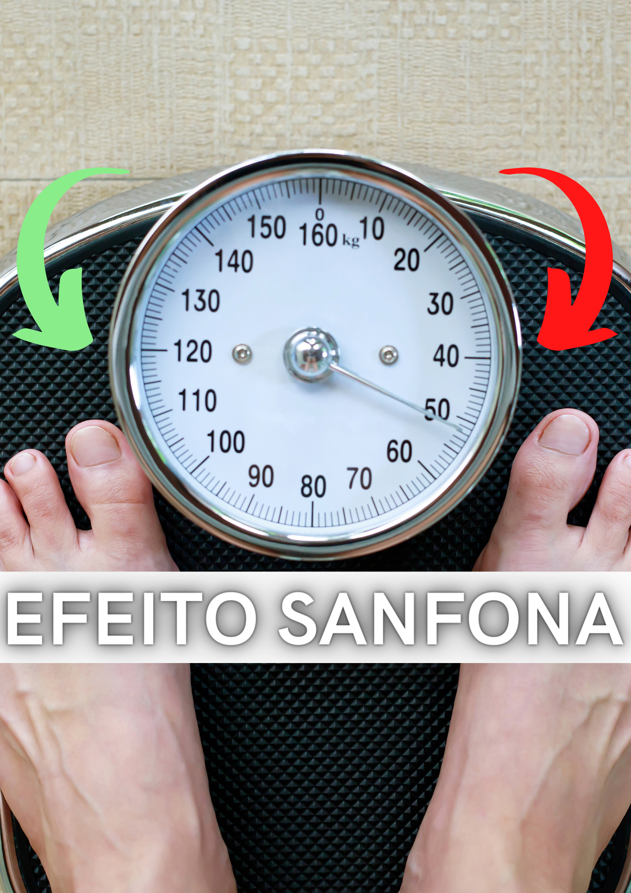

O Efeito Sanfona são oscilações dos quilos que vão e voltam e deixam as mulheres malucas com tanta mudança de manequim.
Esse efeito se caracteriza com a perda e ganho de peso após o emgrecimento, ou seja,
o ponteiro da balança vai lá para baixo durante período do porcesso de perda de peso, mas volta a subir quando esse processo é interrompido sem precauções.
Após esse processo de engorada e emagrece, as estrias aparecem na pele quando há fibrose localizada excessiva na forma de cordões,
como resposta à quebra e má qualidade das fibras previamente existentes.
Ou seja, são cicatrizes desse tecido danificado.
Locais onde mais ocorrem as as cicatrizes
"Barriga, Quadris, Nádegas, Pernas, Coxas, Braços, Costas e Seios"
 .....
.....
 .....
.....


.....

 .....
.....

" Estrias na Gravides "
As estrias são um dos aspectos mais temidos pelas mulheres durante a gravidez.
No entanto, se você tomar alguns cuidados, poderá reduzir o risco de elas aparecerem ou tornar sua aparência muito sutil.
 .....
.....

" Cuidados com as Estrias na Gravides "
 .....
.....

Protocolo Anti Estrias
oferece uma incrível coleção de maravilhosas Pomadas caseiras e Massagens!
Para diminuir e até eliminar a flacidez e estrias localizadas...
Barriga, Quadris, Nádegas, Pernas, Coxas, Braços, Costas e Seios!
" Antes e Depois do Protocolo Anti Estrias "
Bem, a boa notícia é que você vai ter todas esses receitas e métodos de massagens.
Basta clicar no link abaixo:
" Incluso "

.....
.....
BÔNUS